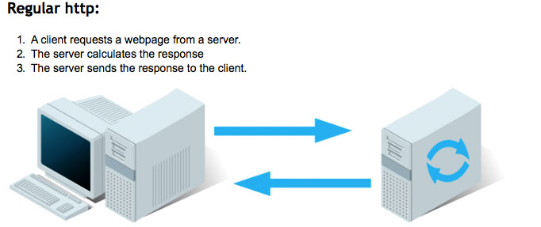
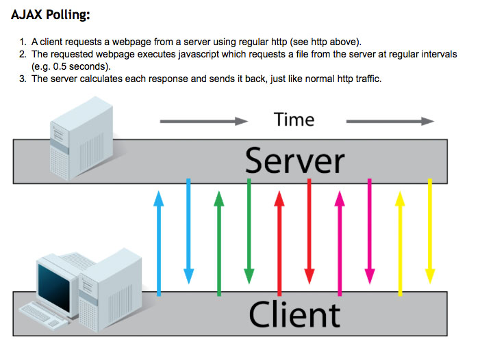
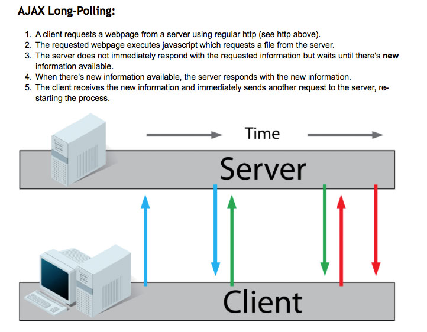
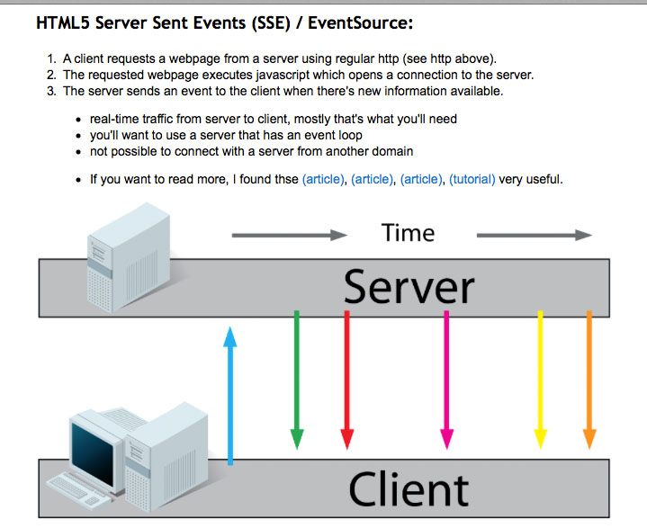
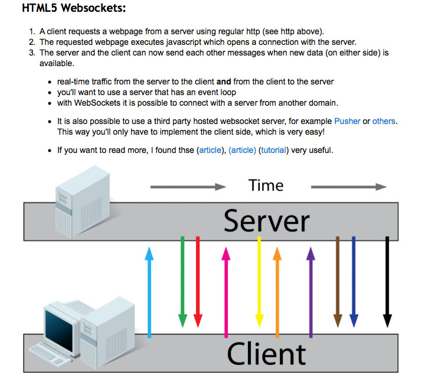
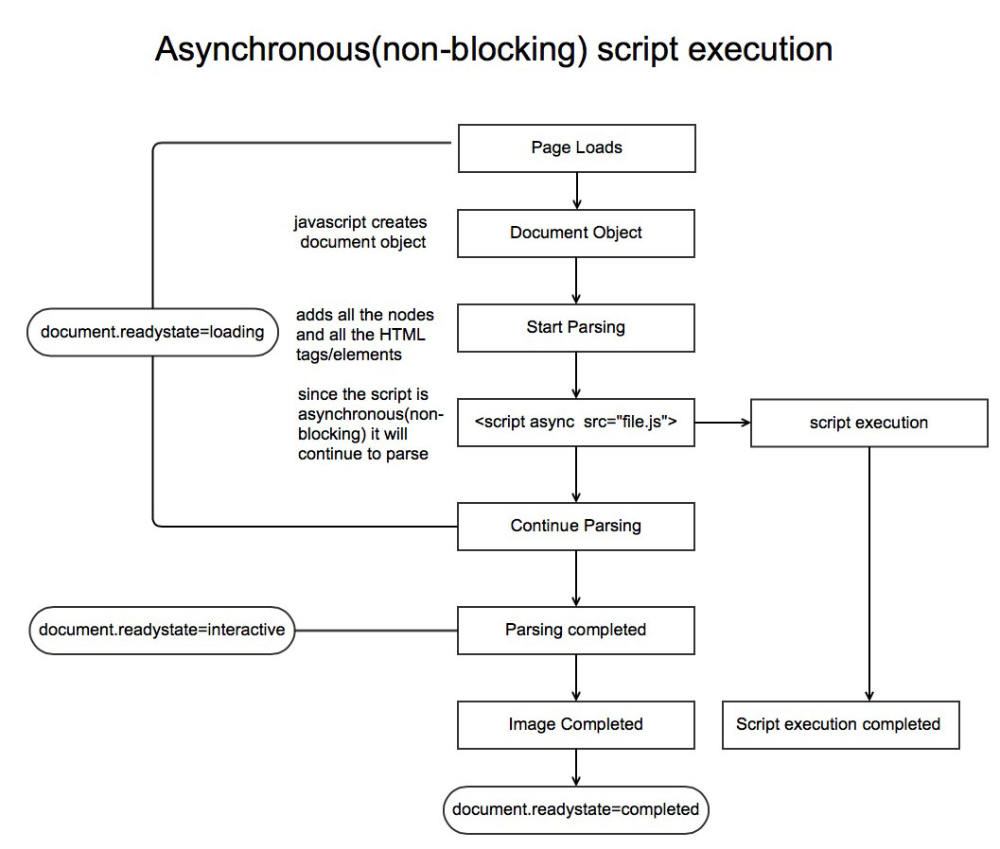

Node.js is an event-driven, non-blocking I/O model. It is a server side JavaScript
environment that is based on the V8 JavaScript Engine, developed by Google. It
compiles and executes JavaScript very efficiently and it is specifically designed for
building fast and efficient real time, data intensive, scalable asynchronous network
applications.
Problem #2
What is the V8 JavaScript Engine?
The V8 JavaScript Engine was developed by Google. It is apart of the Google Chrome web
browser and allows Chrome to run Javascript code much faster. It is able to do this by
compliling the JavaScript directly into native machine code. Other browsers interpret
JavaScript, or execute it as bytecode.
Problem #3
What are some benefits for using JavaScript and node.js for server side programming?
Some benefits are:
Both the front and back end of the a web application can be developed in the same language
minimize developer learning curves
minimize developer context switches
Problem #4
What are modules? Name a few Node.js modules that is apart of the Node.js API as well as modules created by external developers?
Modules are libraries that extend the functionality of node.js. Some modules are
packaged with node.js.These modules make up the node.js API. Other modules are
written by external developers in the node.js community.
Modules that are apart of Node.js API
STDIO: allows you to print to stdout and stderr from your node.js application (i.e. console.log(), console.error(), console.assert()
HTTP:enable robust HTTP/HTTPS communication capabilities
File System:Provide file I/O capabilities
Crypto: Provides cryptographic functions.
URL:Utility module for resolution and parsing of URLs.
Net: An asynchronous network wrapper
Modules made by external developers
Express: Enables quick and efficient generation of web applications built on node.js
CoffeeScript: slick, efficient programming language system that compiles into JavaScript
Async.js:Utility module to aid in working with asynchronous JavaScript
Problem #5
What are some smiliar enviornments to Node.js that have been written for Ruby or Python?
EventMachine for Ruby
Twisted for Python
Problem #6
When should you use Node.js?
You want to use Node.js in applications that require:
Heavy I/O
Event-driven behavior
High Scalability (i.e. many clients)
When your applocation requires a persistent connection to the server for connection to the server for continuous data transfer.
Problem #7
Describe regular HTTP, AJAX polling, AJAX long polling, HTML5 SSE/EventSource, and HTML5 websockets?





Reponse taken from: Stackoverflow
Problem #8
How is Node.js different from traditional real time client sever communication over
HTTP?
Traditionally, real-time client-server communication over HTTP is done using
techniques such as long polling. For example, each active long-polling client uses a
server process. This creates a large amount fo server load.
Using node, we can do this efficently without opening a separate server thread to
each client. This allows synchronous applications to run with very little load on the
server.
Problem #9
What are some applications that Node.js are particularly suited for?
Real-time chat servers
Streaming servers
Real-time collaboration applications
Games
Problem #10
what is threading in computer science?
A thread is short for a thread of excecution. Threads are a way for a program to divide(
termed "split") itself into two or more simultaneously (or pseudo-simultaneously)
running tasks.
Problem #11
What is asynchronous(non-blocking) script implementation?

When a page loads, javascript will create a document object. After it creates a
document object, it will start parsing. Parsing means it will start adding all the
nodes and adding all the html elements and tags into the document object. After
parsing, if javascript gets any asynchronous script tag, it will continue parsing.
However, if javascript gets a synchronous script tag, it will stop parsing at the
moment when the script is executing.
To check the state of the parsing, we can use document.readystate. When it parsing, it
will be in the loading state. When parsing is complete, document.readystate will be
interactive. After parising is complete, the DOM content loaded will be fired on the
document object. After that, images will load. After the images finished loading and
the script finished execution, the ready state will become complete.